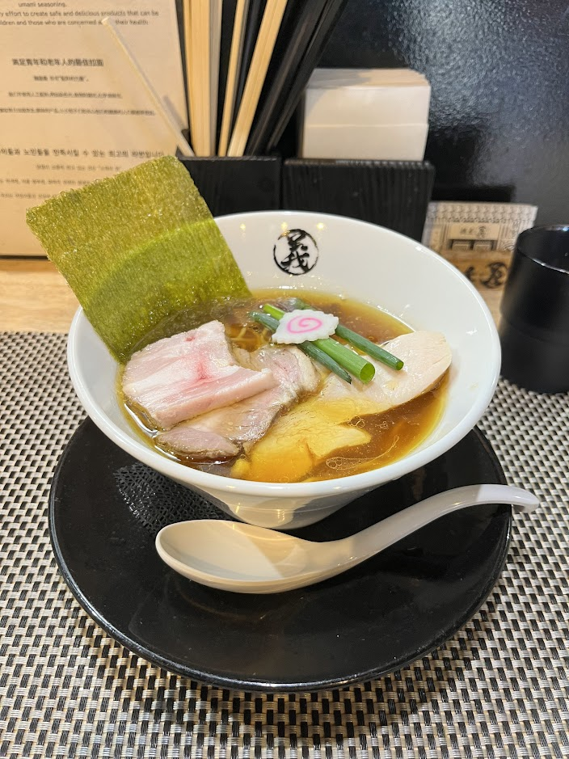

Menya Yoshi - Special Shoyu Ramen

- Price: ¥1400
- Rating: 8.5/10
- Last date I had it : 2024-12-23
- Review: staff are friendly for deaf/hearing-impaired people which is great since you don’t find many inclusive places like this in jpn. also, usually when one imagines ramen they’d think of loudass busy places (stereotypically terrible for first dates) but this was quiet and tranquil. I found each topping fascinatingly fresh and explosive in flavor, especially the chicken chashu. the soup is a flavorful and clean seafood-based shoyu. the star is the velvety and clean chicken oil they use that enhances everything. the main downside is the broth is slighlty too salty, so I had to reset my palate w/ water a few times. Adding yuzu koshou halfway thru the bowl was a great flavor change and absolutely remade how I viewed the bowl, usually I add white pepper but the guy next to me added yuzu koshou so I did too.